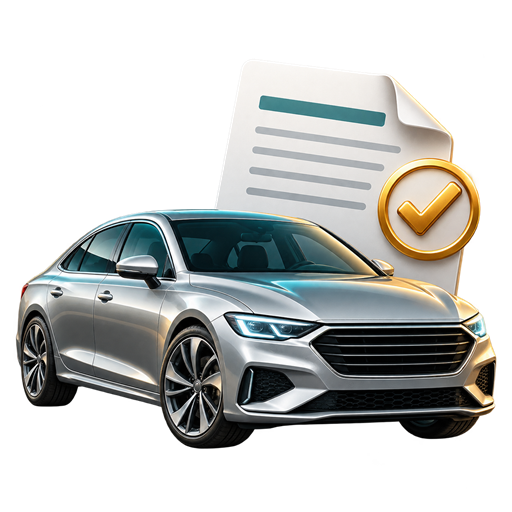

Adaugi actele
Fotografiezi direct din aplicație sau imporți imagini și pagini PDF. Ai secțiuni separate pentru vânzător, cumpărător și vehicul, cu încadrare și decupare.

AutoContractAPLICAȚIE ANDROID · OCR LOCAL
De la documentele vânzătorului și cumpărătorului la contractul auto PDF. Citești actele pe telefon, verifici datele și pregătești formularul ITL 054.
Dezvoltat de Selberg · Datele se păstrează local sau, la alegerea ta, în propriul Google Drive.
PAS CU PAS
Fotografiezi direct din aplicație sau imporți imagini și pagini PDF. Ai secțiuni separate pentru vânzător, cumpărător și vehicul, cu încadrare și decupare.
Verifici propunerile lângă fragmentele din document. Confirmi CNP-ul și seria de șasiu, apoi completezi prețul în lei sau euro, data și localitatea.
Generezi contractul PDF din formularul ITL 054. Poți adăuga semnături desenate, copii ale actelor și poți previzualiza, distribui sau imprima documentele.
OCR-ul poate greși. Compară propunerile cu actele și confirmă informațiile înainte de generarea contractului.
ARHIVA TA
Regăsești contracte, persoane și vehicule după datele salvate. Integrarea Google Drive este opțională.
Cum sunt folosite dateleSUPORT
Contact pentru aplicație și confidențialitate: Selberg.